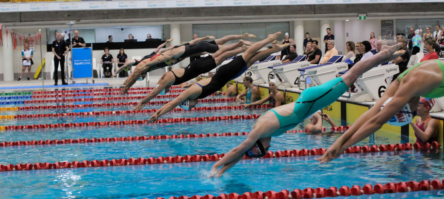
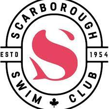
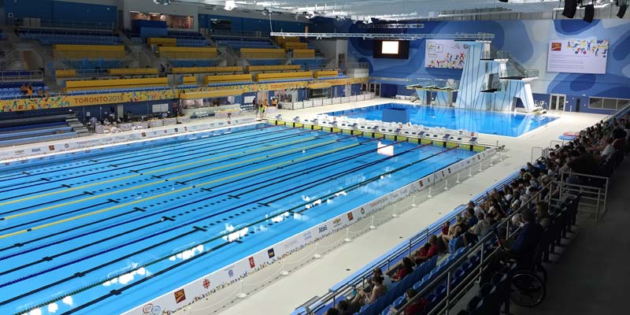
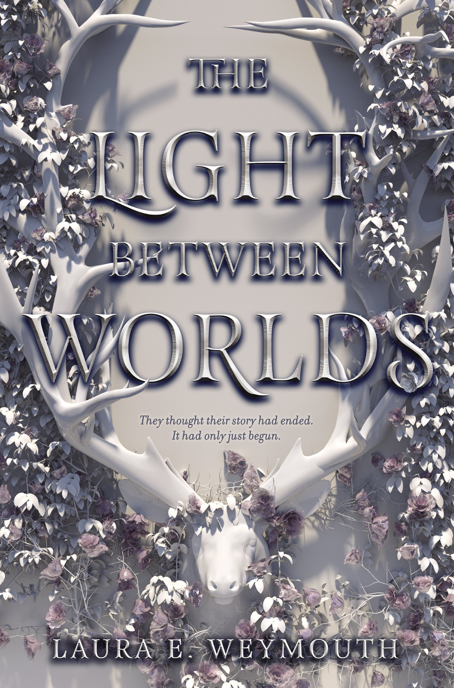

| Home | Fun Facts | About me | References |
|---|
As you may have found out from the fun facts page, I indeed do competitive swimming. I have been swimming for as long as I can remember. However, just like many others I also used to have a fear of the deep end. I took sometime, for me to get over my fear of swimming in the deep end, but I did it because I knew I really enjoyed the nature of competitve swimming.
For the past 3-4 years, I have been swimming for Scarborough Swim Club. One of the many amazing bonuses that come with swimming with Scarborough swim club, includes the fact that I get to train at the Toronto Pan Am Sports Center (TPASC), where even professional/olympic swimmers like Penny Oleksiak, Michele Toro, Finlay Knox, Taylor Ruck, and others train.
 A few of my favorite Olympic Swimmers include:
Not only do I do competitve swimming, but I also love to read and crochet.
I mostly prefer fiction/fantasy over anything else, but I also love to read
books that are based upon true experiences. Some of the books I really enjoyed
include:
Color me in By Natasha Diaz
The Light Between Worlds By Laura E. Weymouth
As you may know, I have previously mentioned that I like to crochet.
A few of the things that I have crocheted include hats, blankets,flowers,
and more!